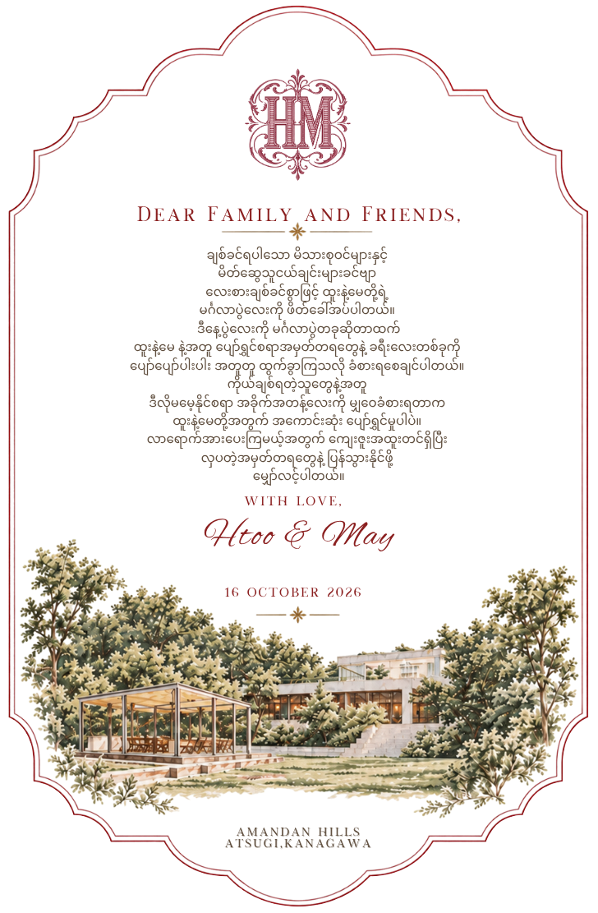
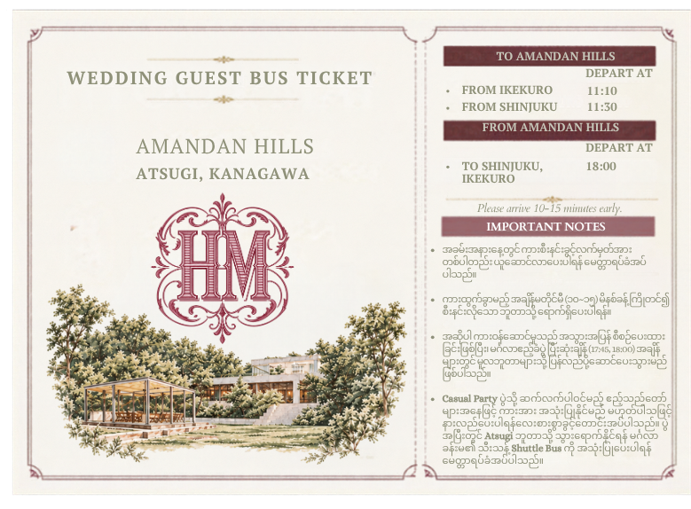
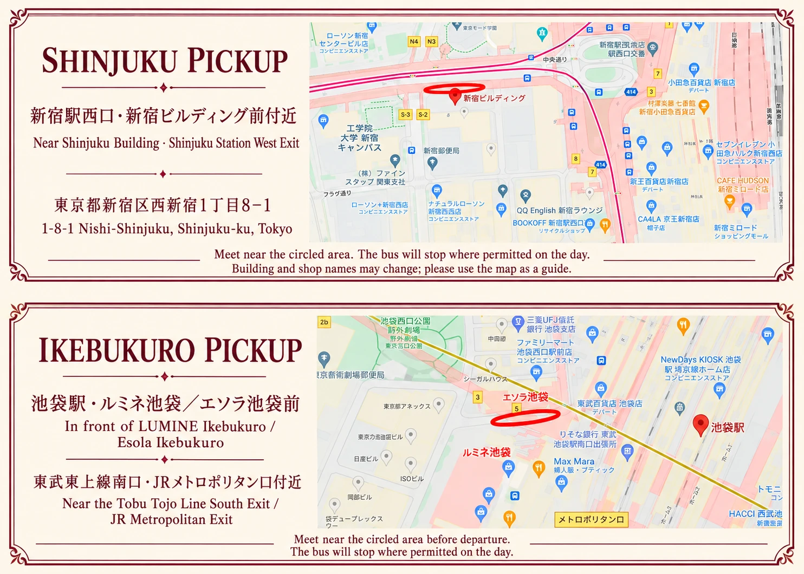

Venue reveal · Newsletter
Htoo&May
Wedding Day Guideမင်္ဂလာပွဲနေ့ လမ်းညွှန်
Friday · 16 October 2026

Dear family and friends —
We're so happy to finally share where we'll be celebrating! Here are the venue and all the little details for our wedding day on 16 October 2026, gathered in one place for you.
ချစ်ခင်လေးစားရပါသော မိသားစုဝင်များနှင့် မိတ်ဆွေများရှင်/ခင်ဗျာ —
၂၀၂၆ ခုနှစ် အောက်တိုဘာလ ၁၆ ရက်နေ့မှာ ကျင်းပမယ့် ကျွန်တော်တို့ရဲ့ မင်္ဂလာပွဲအတွက် ပွဲကျင်းပမယ့်နေရာနဲ့ သိထားသင့်တဲ့ အရေးကြီးအချက်အလက်လေးတွေကို ဒီ newsletter မှာ စုစည်းပြီး ဝမ်းမြောက်စွာ မျှဝေပေးလိုက်ပါတယ်။
The venueပွဲကျင်းပမည့်နေရာ
AMANDAN HILLS
Atsugi, Kanagawa
〒243-0124 神奈川県厚木市森の里若宮13-3
Open Google MapGoogle Map တွင် ကြည့်ရန်Your wedding day
Ceremony scheduleCeremony အချိန်ဇယား
- Reception & Welcome13:30
- Chapel Ceremony14:30
- Banquet15:15
- Ceremony endsCeremony ပြီးဆုံးချိန်17:30
Reception opens at 13:30 — please arrive a little early so you can settle in comfortably before the ceremony begins.
Reception ကို 13:30 မှာ စတင်ဖွင့်လှစ်မှာ ဖြစ်တာကြောင့် အခမ်းအနား မစတင်ခင် အေးအေးဆေးဆေး နေရာယူနိုင်အောင် အချိန်မီ ရောက်ရှိပေးပါရန် မေတ္တာရပ်ခံအပ်ပါတယ်။
Wedding guest bus
Getting there by busWedding Guest Bus ထွက်ခွာချိန်
- From Ikebukuro11:10
- From Shinjuku11:30
Important: the bus leaves right on time. Please be at the meeting point 10–15 minutes early — we're so sorry, but we won't be able to wait for late arrivals.
အရေးကြီးသော အသိပေးချက် — ဘတ်စ်ကားက သတ်မှတ်ထားတဲ့ အချိန်အတိုင်း တိတိကျကျ ထွက်ခွာမှာ ဖြစ်တာကြောင့် meeting point ကို ၁၀–၁၅ မိနစ်ခန့် ကြိုတင်ရောက်ရှိပေးပါရန် မေတ္တာရပ်ခံအပ်ပါတယ်။ နောက်ကျပြီးမှ ရောက်လာပါက စောင့်ဆိုင်းပေးနိုင်မှာ မဟုတ်တာကို နားလည်ပေးကြဖို့ လေးစားစွာ အသိပေးအပ်ပါတယ်။

Bus pickup points
Where to meet the busဘတ်စ်ကား စောင့်ရမည့်နေရာ
Please meet near the circled area on the map. The bus will stop wherever it's permitted on the day, so look out for our team nearby.
မြေပုံပေါ်မှာ အဝိုင်းပြထားတဲ့ နေရာအနီးမှာ စောင့်ဆိုင်းပေးပါနော်။ ဘတ်စ်ကားက ပွဲနေ့မှာ ရပ်ခွင့်ရှိတဲ့ နေရာမှာ ရပ်မှာ ဖြစ်တာကြောင့် အနီးအနားမှာ ကျွန်တော်တို့ အဖွဲ့ဝင်တွေကို ရှာကြည့်ပေးပါ။
Shinjuku
11:30新宿駅西口・新宿ビルディング前付近
Near Shinjuku Building · Shinjuku Station West ExitShinjuku ဘူတာ West Exit · Shinjuku Building ရှေ့အနီး
東京都新宿区西新宿1丁目8-1 · 1-8-1 Nishi-Shinjuku, Shinjuku-ku
Shinjuku pickup on Google MapShinjuku နေရာကို Google Map တွင်ကြည့်ရန်Ikebukuro
11:10池袋駅・ルミネ池袋／エソラ池袋前
In front of LUMINE Ikebukuro / Esola Ikebukuro — near the Tobu Tojo Line South Exit / JR Metropolitan ExitLUMINE Ikebukuro / Esola Ikebukuro ရှေ့ — Tobu Tojo Line South Exit / JR Metropolitan Exit အနီး
東武東上線南口・JRメトロポリタン口付近
Ikebukuro pickup on Google MapIkebukuro နေရာကို Google Map တွင်ကြည့်ရန်
After the ceremony
Two ways homeပြန်မည့်လမ်းကြောင်း ၂ မျိုး
1Heading home after the ceremonyCeremony အပြီး ပြန်မည့်သူများ
The wedding guest bus leaves AMANDAN HILLS for Shinjuku / Ikebukuro at around 18:00.
Wedding Guest Bus က AMANDAN HILLS ကနေ Shinjuku / Ikebukuro ဆီကို 18:00 ခန့်မှာ ထွက်ခွာမှာ ဖြစ်ပါတယ်။
2Staying on for the Casual PartyCasual Party ဆက်လက်တက်ရောက်မည့်သူများ
If you have an Extension Pass, you're welcome to stay on at the venue after the ceremony. Please don't board the return bus — the Casual Party details are just below.
Extension Pass ရရှိထားသူများအနေနဲ့ Ceremony ပြီးတာနဲ့ ပွဲကျင်းပရာနေရာမှာပဲ ဆက်လက်နေထိုင်နိုင်ပါတယ်။ Ceremony အပြီး ထွက်ခွာမယ့် return bus ကို မစီးဖို့ မေတ္တာရပ်ခံအပ်ပါတယ်။ Casual Party အသေးစိတ်ကို အောက်မှာ ဖော်ပြပေးထားပါတယ်။
Extension Pass · Casual Party
Casual Party scheduleCasual Party အချိန်ဇယား
- Casual Party Reception17:30
- Casual Party Start18:30
- Casual Party Ends20:30
- Return Shuttle → Hon-Atsugi Station20:45~
Please bring the Extension Pass we sent you, so you can show it at the Casual Party reception.
Casual Party reception မှာ ပြသနိုင်ဖို့ ကျွန်တော်တို့ ပို့ပေးထားတဲ့ Extension Pass ကို ယူဆောင်လာပေးပါရန် မေတ္တာရပ်ခံအပ်ပါတယ်။
⚠️ Good to know if you're staying for the Casual Party
- There's a separate party fee for the Casual Party. Please check the details on your Extension Pass / invitation.
- Please don't take the wedding guest return bus after the ceremony. Instead, a return shuttle will run from AMANDAN HILLS → Hon-Atsugi Station at 20:45~ after the Casual Party.
- The return shuttle goes to Hon-Atsugi Station only, so please plan your onward journey home from there in advance.
⚠️ Casual Party ဆက်တက်မည့်သူများ သိထားစေလိုသည်များ
- Casual Party အတွက် သီးသန့် Party Fee ရှိပါတယ်။ Fee အချက်အလက်ကို ကိုယ်တိုင်ရရှိထားတဲ့ Extension Pass / ဖိတ်ကြားလွှာပါ အချက်အလက်များအတိုင်း စစ်ဆေးပေးပါရန် မေတ္တာရပ်ခံအပ်ပါတယ်။
- Ceremony အပြီး ထွက်ခွာမယ့် Wedding Guest Return Bus ကို မစီးဖို့ မေတ္တာရပ်ခံအပ်ပါတယ်။ Casual Party ပြီးဆုံးပြီးနောက် 20:45~ မှာ AMANDAN HILLS → Hon-Atsugi Station Return Shuttle Bus ကို စီစဉ်ပေးထားပါတယ်။
- Return Shuttle က Hon-Atsugi Station အထိသာ ပို့ဆောင်ပေးမှာ ဖြစ်တာကြောင့် အဲဒီကနေ အိမ်ပြန်မယ့်ခရီးကို ကြိုတင်စီစဉ်ထားပေးပါနော်။
Atsugi weather
16 October 2026 forecast၂၀၂၆ အောက်တိုဘာ ၁၆ ရက်နေ့ ရာသီဥတု
Evenings can turn cool, so we'd suggest bringing a light layer, a jacket or a shawl. Rain looks unlikely, but a folding umbrella is handy just in case.
Forecasts can change, so please check again closer to the day.
ညနေခင်းမှာ အေးမြလာနိုင်တာကြောင့် ပေါ့ပါးတဲ့ အနွေးထည်၊ အပေါ်ထပ်အင်္ကျီ ဒါမှမဟုတ် shawl လေးတစ်ထည် ယူဆောင်လာပေးပါနော်။ မိုးရွာနိုင်ခြေ နည်းပါးပေမယ့် လိုအပ်ရင် သုံးနိုင်ဖို့ ခေါက်ထီးလေးတစ်လက် ပါလာရင် ပိုစိတ်ချရပါတယ်။
ရာသီဥတု ခန့်မှန်းချက်တွေ ပြောင်းလဲနိုင်တာကြောင့် ပွဲနေ့နီးလာတဲ့အခါ ထပ်မံစစ်ဆေးပေးပါရန် မေတ္တာရပ်ခံအပ်ပါတယ်။
Forecast checked 9 Oct 2026 · Timeanddate / CustomWeather
We can't wait to welcome every one of you on our wedding day. Wishing you a smooth and easy journey — and here's to the happy memories we'll make together.
မင်္ဂလာပွဲနေ့မှာ လာရောက်ချီးမြှင့်ပေးကြမယ့် ဧည့်သည်တော်များ အားလုံးကို ဝမ်းမြောက်စွာ ကြိုဆိုနေပါတယ်။ လမ်းခရီးတစ်လျှောက် အဆင်ပြေချောမွေ့ပြီး ပျော်ရွှင်ဖွယ် အမှတ်တရလေးတွေကို အတူတကွ ဖန်တီးနိုင်ကြပါစေလို့ ဆုမွန်ကောင်းတောင်းအပ်ပါတယ်။
With love,
Htoo & May
16 October 2026 · AMANDAN HILLS